The Specimen Registry
A closer look at our genetic botanical anomalies.
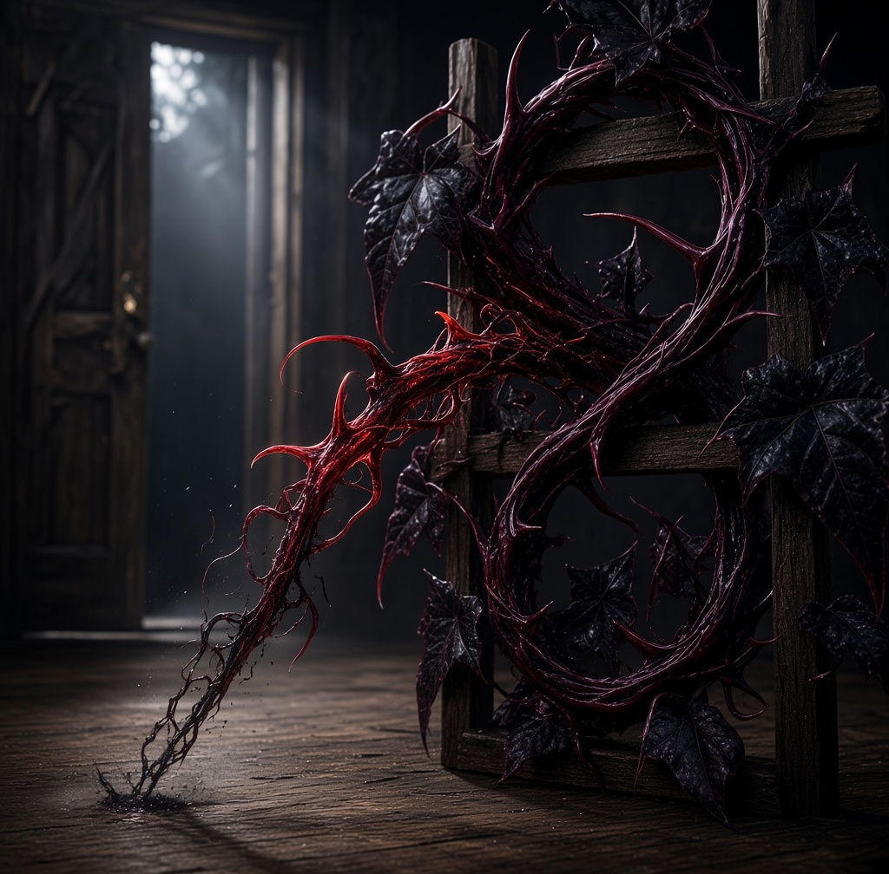
VAMPIRE VINE
Origin/Class: Parasitic-Sanguine / Strain ID: #066
An aggressive, iron-spiked climber that does not photosynthesize; instead, its razor-sharp tendrils sense the thermal radiation and heartbeat of passing warm-blooded creatures. When it strikes, it draws minimal moisture from the air rather than soil.
Care & Containment Directives:
- Placement: Keep firmly away from open doors, stairwells, or anywhere family members frequently walk. It treats open walking paths as an invitation to bridge the gap.
- Feeding: Do not attempt hand-feeding. If you notice the thorns turning a deeper crimson, wipe down nearby window glass to remove stray static charges.
- Rule: An aggressive climber that reacts violently to movement. Keep it clear of open entryways.
Warning: If a tendril begins tapping a rhythmic pattern against the floorboards, it has locked onto a target in the room below. Relocate immediately.
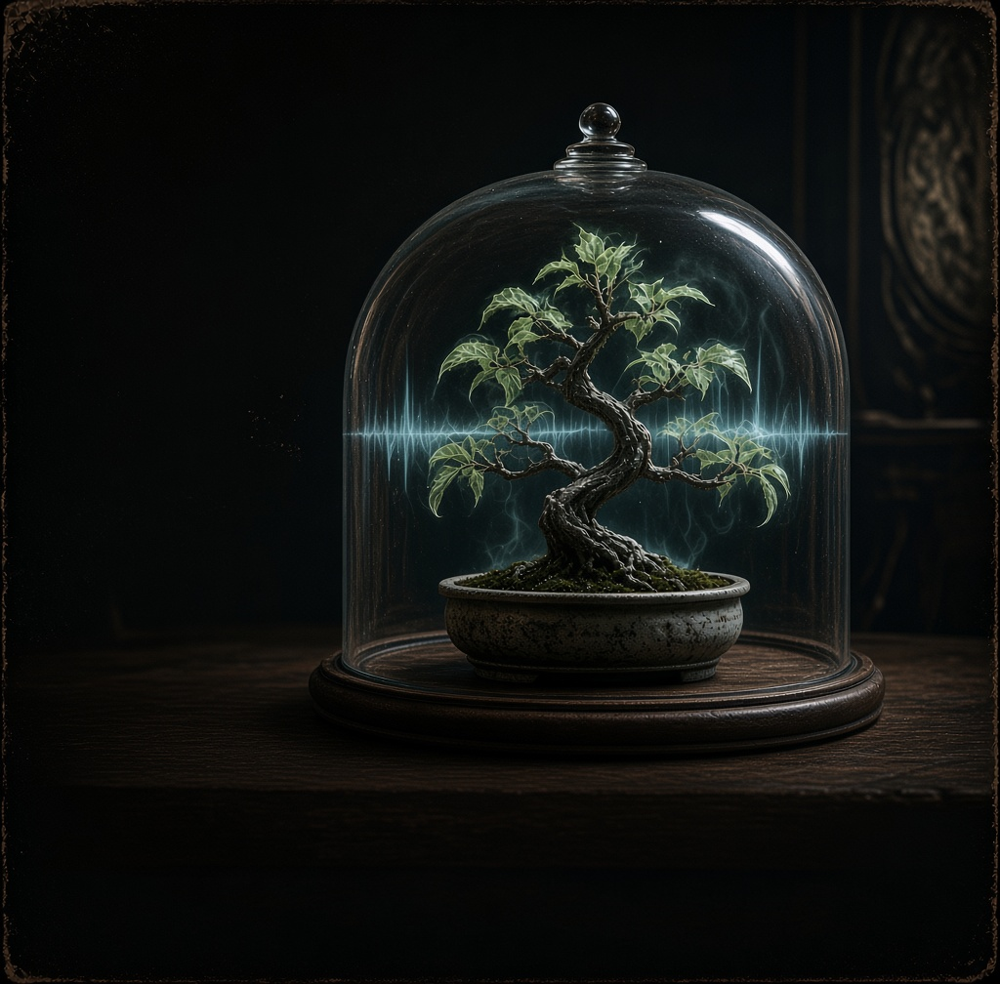
BANSHEE BONSAI
Origin/Class: Acoustic-Arboreal / Strain ID: #103
A gnarled, ash-trunked specimen whose micro-leaf structures act as biological tuning forks. When its moisture levels drop below critical thresholds, it doesn't wilt—it begins emitting a high-frequency acoustic wail that bypasses standard earplugs and vibrates directly in the listener's dental work.
Care & Containment Directives:
- Placement: A thick glass cloche is a must, emits an ultrasonic frequency even when under-watered.
- Feeding: Water strictly every third night using stagnant tap water. Never miss a schedule.
- Rule: Always wear industrial sound-suppression gear during maintenance.
Warning: The wail is known to shatter untreated glass within a five-foot radius and can temporarily disorient household pets. If it starts crying in a minor key, your water source has gone stale.
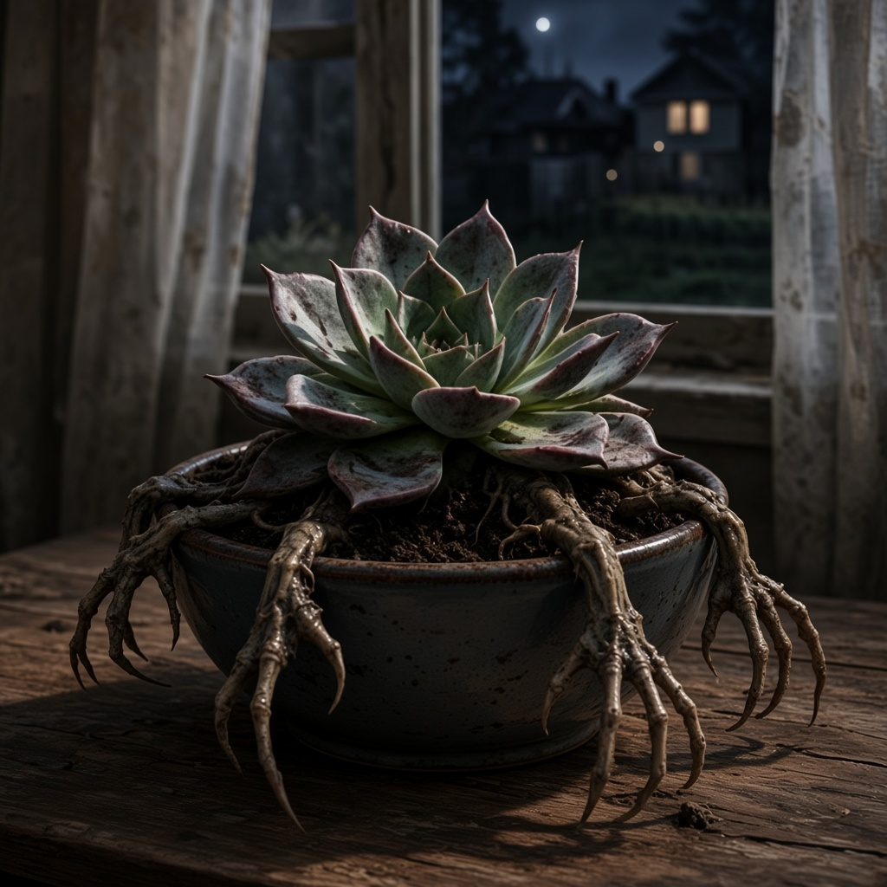
ZOMBIE SUCCULENT
Origin/Class: Undead-Botanic / Strain ID: #013
Biologically impossible, this rubbery green specimen defies every known law of agronomy. It requires zero soil, zero water, and zero sunlight to persist. Pathology reports suggest its cellular matrix is locked in permanent post-mortem animation, refusing to decay or rest.
Care & Containment Directives:
- Placement: Must be kept in a deep ceramic bowl with high lip clearance.
- Feeding: Place decomposed organic matter (household food scraps, rotting produce, etc.) directly near its root base. The specimen will absorb the decaying nutrients over 24–48 hours.
- Rule: If left completely unattended for more than forty-eight hours, its root stems sprout tiny, claw-like appendages that allow it to slowly drag itself across flat surfaces.
Warning: Good luck with the smell. We recommend keeping this specimen in a well-ventilated area—or in a room you rarely inhabit.
Warning: Do not leave near windowsills left open for ventilation. Several specimens have successfully "escaped" onto suburban lawns, where they refuse to integrate back into flowerbeds.
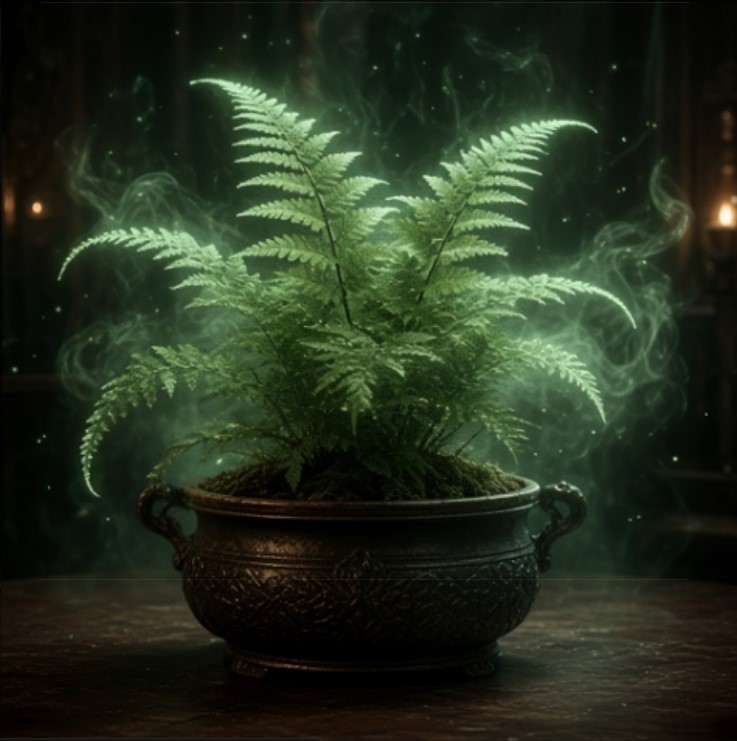
PHANTOM FERN
Origin/Class: Quantum-Cryptis / Strain ID: #069
A delicate, feather-fronded mystery that thrives exclusively in total, pitch-black darkness, where it emits a soft, ghostly bioluminescence. However, its root structure exists partially out of phase with our current dimension, resulting in frequent localized spatial displacement.
Care & Containment Directives:
- Placement: Keep in windowless closets, basements, or dark display cases. Exposure to direct sunlight causes the fronds to turn transparent and smell faintly of ozone.
- Feeding: Self feeding, after it returns with a light coating of dust.
- Rule: Do not panic if the pot appears empty during routine checks.
Warning: Due to quantum shifting, this specimen will routinely vanish from its container for 5 to 10 minutes at a time, only to reappear with a light coating of dust from an unknown room. Never touch the empty pot while it is phased out.
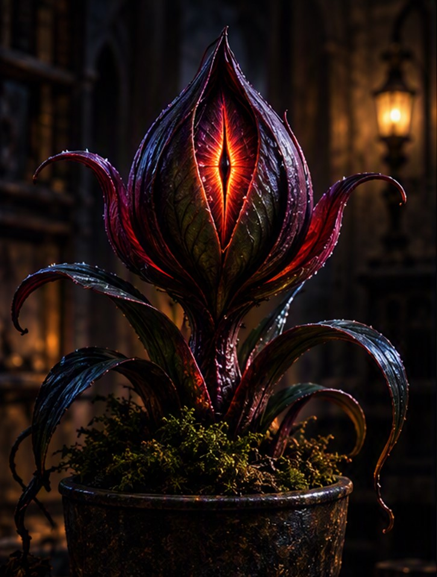
WATCHERS BULB
Origin/Class: Ocular-Flora / Strain ID: #084
Distinguished by a fleshy, iridescent central node that behaves remarkably like a cornea. The bulb remains motionless until a living body enters its line of sight, at which point the central lens contracts and silently rotates to maintain direct eye contact.
Care & Containment Directives:
- Placement: Avoid staring into the central lens for prolonged periods. Long-term exposure frequently causes a sensation of being observed even after leaving the building.
- Feeding: Thrives under dim, ambient lighting. In complete pitch-black, its lens dilates to nearly three times its normal size to seek out nearby thermal signatures.
- Rule: The glossy central bud that slowly turns to track human body heat across the room. Do not blink first.
Warning: If the pupil-like structure rapidly twitches or dilates while no one is moving, it has detected something else in the room behind you.
FROSTBITE IVY
Origin/Class: Cryo-Botanical / Strain ID: #404
A pale, crystalline creeper that actively draws thermal energy out of its surroundings. The sharp, translucent frost dusting its leaves never thaws—even when exposed to direct heat sources, which only cause the plant to drop its local ambient temperature further.
Care & Containment Directives:
- Placement: Drops the immediate surrounding air temperature by approximately 5 to 10 degrees. Do not place near delicate electronics or liquid containers prone to freezing.
- Feeding: Thrives by sprinkling snow on it.
- Rule: Always wear insulated leather gloves when handling its stems. Skin contact for longer than three seconds risks mild cold burns and temporary numbness.
Warning: If the frost layer suddenly thickens into dense white ice spikes, it is rapidly absorbing excess heat from an unseen thermal surge nearby.
ECHOING ORCHID
Origin/Class: Acoustic-Resonant / Strain ID: #112
Boasts velvety, pitch-black petals lined with microscopic hair-like cilia that act as continuous audio recording membranes. It stores ambient acoustics within its fluid-filled stem before vibrating its petals to playback sounds with eerie, mechanical clarity.
Care & Containment Directives:
- Placement: Position in a high-traffic room with consistent ambient noise to prevent sensory dormancy. Plays back room audio on a delayed loop—typically 3 hours after the original noise occurred.
- Feeding: Consumes any surrounding sound, though its metabolic preference varies. Inspect petal size to gauge acoustic sensitivity: specimens with larger petals require minimal ambient noise to sustain themselves, while specimens with smaller petals require significantly amplified volumes to avoid starvation.
- Rule: Do not place it near a graveyard.
Warning: If the orchid replays a voice speaking sentences that no occupant in the home remembers saying, do not answer it.
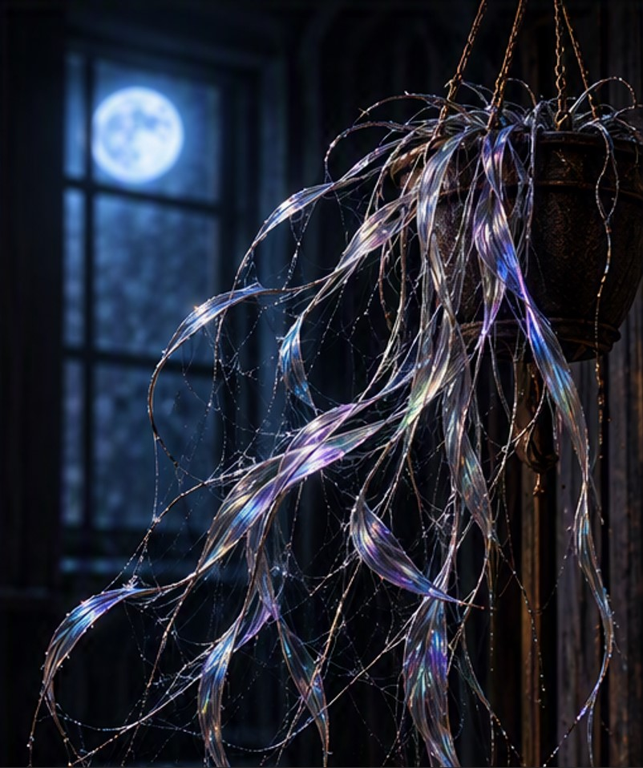
WIDOWS WEAVE
Origin/Class: Metalloid-Vitus / Strain ID: #117
A slow-creeping vine that extrudes razor-thin, metallic silk fibers from the undersides of its dark leaves. Under moonlight or UV lighting, these silvery strands glimmer identically to pristine, dew-covered arachnid webbing.
Care & Containment Directives:
- Placement: Keep clear of high-traffic walkways or ceiling fans; the airborne threads can catch light fixtures and create fine web canopies overnight.
- Feeding: This specimen subsists entirely on genuine pearls. Fake pearls are actively purged and pushed back above the soil line. Notably, the plant displays dynamic pigmentation shifting based on its diet. The ingestion of standard white pearls induces a classic, high-gloss silver nacre. Conversely, the introduction of black pearls triggers a dramatic darken cycle, shifting the gradient toward deep violet and charcoal tones.
- Rule: High tensile strength makes standard garden shears useless. Prune exclusively with tungsten wire-cutters to avoid tearing the main vine.
Warning: The silk strands are coated in a mild, sticky neuro-adhesive. If entangled, do not pull aggressively—use rubbing alcohol to dissolve the bond cleanly.
Warning: Opulent appetite.
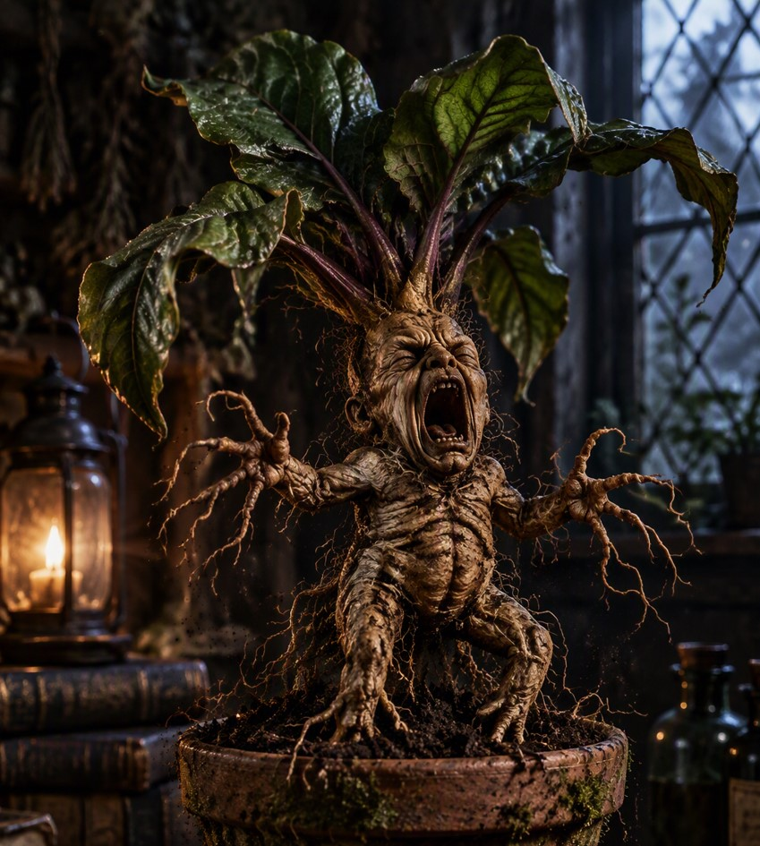
SCREAMING MANDRAKE ROOT
Origin/Class: Subterranean-Hominid / Strain ID: #001
A primitive, fleshy tuber system whose dense root network grows into a grotesque, humanoid silhouette complete with distinct facial features. It maintains a constant, high-pressure vocal sac underground; as long as dark soil exerts outward pressure on the root, the vocal mechanism remains compressed and silent.
Care & Containment Directives:
- Placement: Soil must be tightly packed using moist peat moss and lead-lined soil weights. Check soil density weekly for loose pockets.
- Feeding: Spoiled milk that was placed under a full-moon light. And when you can, a fresh goat's milk out in a silver chalice during a full lunar eclipse.
- Rule: Ear protection (minimum NRR 33 rating) is mandatory during repotting procedures.
Warning: Do not attempt to recreate methods seen or heard of in fictional media; they are entirely ineffective and may cause an early termination of the specimen...
Warning: If extracted from its pot without acoustic dampening, the resulting 130-decibel shriek can shatter glass within a twelve-foot radius and induce immediate nausea in human handlers.
Attention: Due to mainstream popularity, it has been sold out. Please email us to join the waitlist for the next batch.
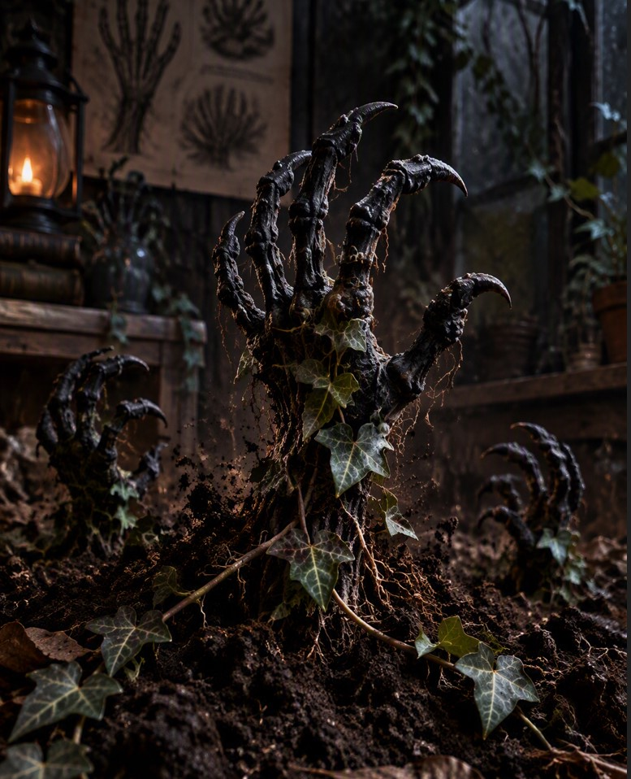
CORPSE ROOT CLAWS
Origin/Class: Mutated-Mycelial / Strain ID: #777
A bio-engineered hybrid that weaponizes the wood-decaying properties of Xylaria polymorpha ("Dead Man's Fingers"). The hard, blackened stromata rupture through the surface mulch like a decayed, skeletal hand. Equipped with a rudimentary tactile sensor grid, the fruiting bodies actively flex and snap toward surrounding objects.
Care & Containment Directives:
- Placement: Thrives on rotting hardwood chips and damp peat moss. Keep away from wooden furniture, baseboards, or low-hanging curtains.
- Feeding: Water, but it's sensitive to mineral-rich groundwater, especially if it's heavy with quartz and/or calcite. It will cause petrification.
- Rule: Maintains a strict six-inch reaction zone. It will snatch and grip fabric, electrical cords, or stray pet collars that drag across its container.
Warning: While not venomous, its grip is surprisingly strong and requires a mild saline solution applied directly to the root wrist to force the "fingers" to release their hold.
Warning: Unauthorized utilization for indoor pest management is strictly prohibited. Instances of physical mishandling have frequently resulted in specimen escape into interior wall voids, creating severe extraction difficulties.
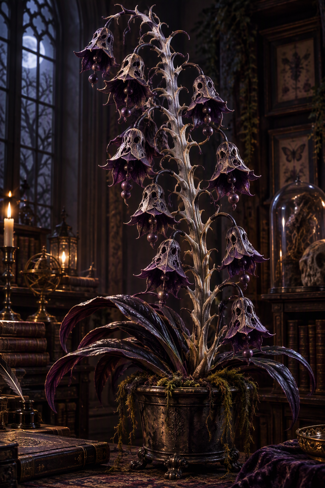
CHIME CHOKE ORCHID
Origin/Class: Resonance-Spore / Strain ID: #202
Features a rigid, calcified spine lined with hollow, bell-shaped seed pods. In absolute silence (0 dB), the pods vibrate subtly, striking one another to emit a hypnotic, metallic chord. However, sharp ambient sounds overload its central nervous stalk, triggering a rapid defensive spore release.
Care & Containment Directives:
- Placement: Best placed in quiet libraries, study rooms, or display cabinets far from speakers, doorbells, or home entertainment units.
- Feeding: Water, but only if it's been near a speaker that was playing classical music first.
- Rule: Keep a damp cloth nearby during routine maintenance. If a sudden loud noise occurs, cover the flower heads immediately to contain airborne drift.
Warning: Inhaling the orchid's fine violet defense spores causes mild temporal disorientation and causes all surrounding speech to sound like ringing church bells for up to two hours.
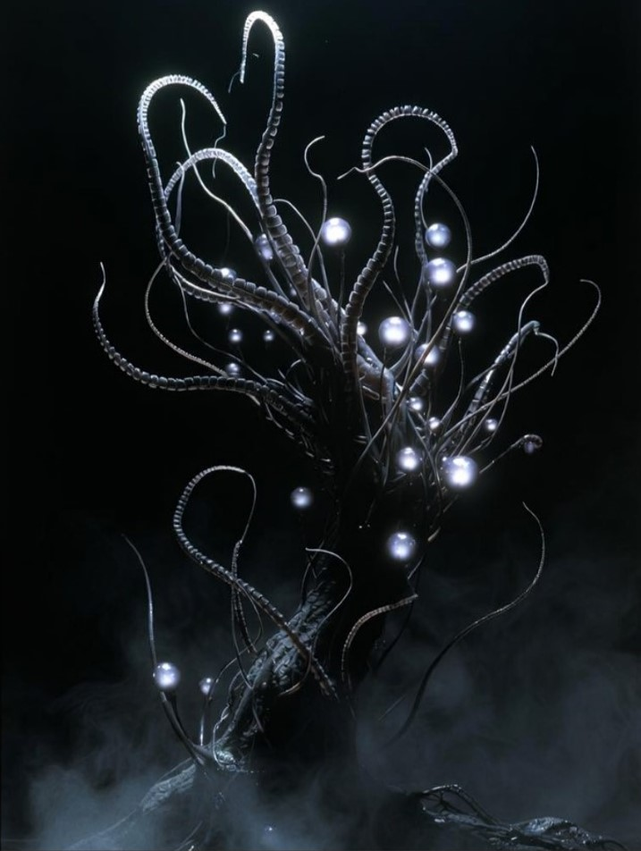
THE VOID TENDRIL (LUNAR)
Class: Abyssal-Cryptis / Origin: Sea of Tranquility (Imported)
Recovered from a sealed vacuum canister following an unrecorded orbital anomaly, the Lunar Void Tendril does not grow in soil—it anchors itself in cold, dark corners and feeds on ambient body heat.
Care & Containment Directives:
- Lighting: Absolute darkness preferred. Artificial light causes the glowing orbs to dilate and hum at frequencies audible only to household pets and restless spirits.
- Feeding: Requires no physical watering. Instead, it absorbs static electricity and moonlight.
- The Mirror Rule: Never place within line-of-sight of a vanity mirror. The recursive reflections create an infinite loop that can slowly drain the color from the room's wallpaper.
Warning: If a guest stares directly into the glowing beacons for longer than ten consecutive seconds and claims to hear whispering, relocate the specimen immediately.
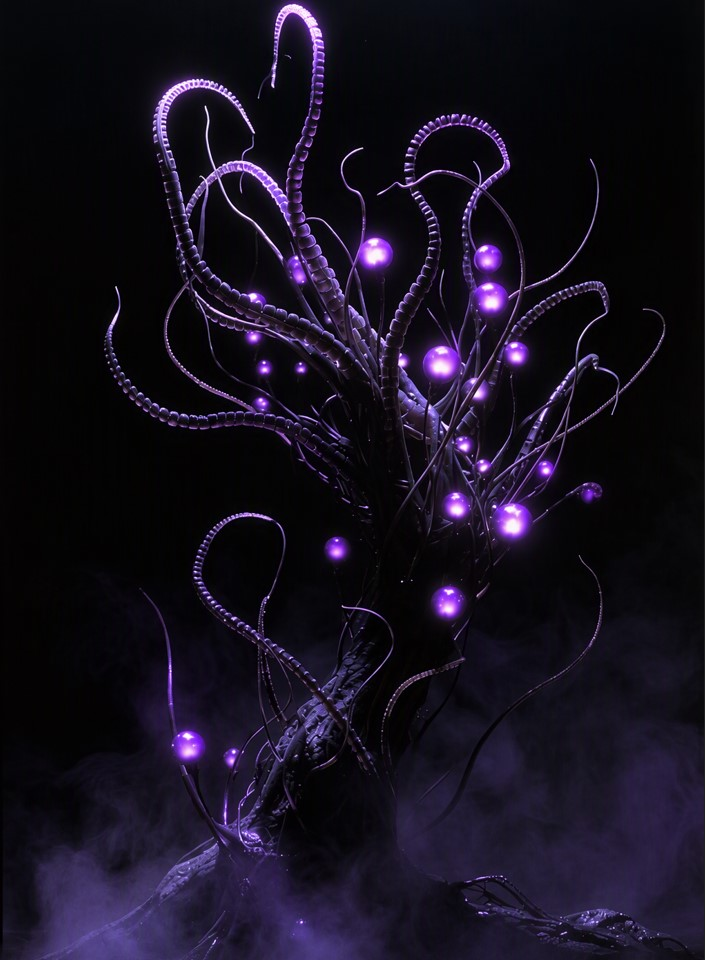
THE VOID TENDRIL (VIOLET)
Class: Abyssal-Cryptis / Origin: Sub-Basement 4 (Domestic Strain)
Unlike its cold lunar sibling, the Violet variant radiates a warm, pulsing ultraviolet glow that reacts directly to the sleep cycles of anyone sleeping on the same floor. Its hum intensifies between 2:00 AM and 4:00 AM, matching the alpha-wave frequencies of human dreaming.
Care & Containment Directives:
- Placement: Ideal for hallways, crawlspaces, or guest rooms you'd prefer your visitors didn't linger in for too long.
- Feeding: Requires no physical watering. Instead, it absorbs static electricity and the fleeting warmth of passing shadows.
- Pruning: Trim only with silver shears during a waning moon. Never touch bare skin to the tendril tips while they are humming.
Warning: If the violet lures suddenly turn pitch black and the hum stops entirely, lock the door to that room and do not open it until sunrise.
Warning: Do not attempt to record the night choir audio using a smartphone or digital recorder; the playback consistently captures voices asking questions you haven't thought of yet.

CELESTIAL (NULLBELL) LANTERN
Origin/Class: Cosmic-Anomalous / Strain ID: #834
A delicate, otherworldly specimen featuring a thin charcoal-black stem resembling polished obsidian glass. Its hanging, bell-shaped pods appear to capture actual fragments of the night sky, complete with drifting star clusters that move independently of real-world astronomy. Its roots do not anchor deep into dirt, instead hovering just above the substrate like suspended pools of dark ink.
Care & Containment Directives:
- Placement: Handle with extreme care. When jostled or disturbed, the lantern pods extinguish their violet light one by one, generating localized pockets of absolute darkness around the plant.
- Feeding: Insects and loose objects entering the shadow experience micro-teleportation, vanishing before reappearing elsewhere in the room. Each transit visibly ages organic matter; insects emerge with significantly shortened lifespans.
- Rule: This plant casts a dense, physical shadow even in pitch-black darkness. During a lunar eclipse, that shadow swells. If an eclipse begins, lock the room immediately. Do not enter until it is over.
Warning: Never reach your bare hand into a shadow cast by the Nullbell Lantern while a pod is extinguished. Localized coordinate displacement is unpredictable, and fingers temporarily out of sync with reality can take up to an hour to rematerialize.

CELESTIAL WHISPERTHORN SEEDLING
Origin/Class: Cosmic-Memetic / Strain ID: #888
A compact rosette of six to eight claw-like leaves featuring a light-absorbing, matte-black surface laced with glowing silver vein networks that mirror shattered constellations. Rather than drifting off, a swarm of tiny purple void spores holds a stable gravitational orbit around the plant's crown. At night, microscopic spore movements through its vascular tissues generate soft acoustic vibrations that resemble whispers in lost languages—or, after prolonged listening, the familiar voices of loved ones.
Care & Containment Directives:
- Placement: The tiny purple spores orbiting its leaves are held in place by localized micro-gravity. Do not use electric desk fans nearby, as disrupting the orbit causes the spores to disperse into the room.
- Feeding: Feeds on ambient emotions. Each seedling has its own preferred emotion and will actively manipulate the minds of those in its vicinity to harvest it. For example, a specimen favoring sorrow may induce sudden, unexplainable weeping. Never place an infant near a seedling, as they lack the emotional maturity to survive the plant's psychic demands.
- Rule: Do not attempt to decipher the whisper patterns. If the plant begins addressing you by name using a voice you recognize, step back and cover the pot with an opaque cloth for twenty minutes.
Warning: When startled or brushed against roughly, the seedling releases a concentrated puff of lavender memory spores. Inhaling these spores causes instant, short-term amnesia—leaving intruders standing in the middle of the room entirely unsure of why they walked in there.
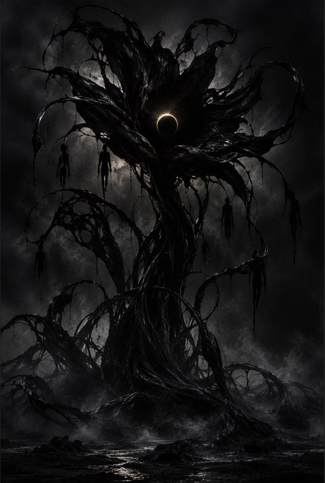
ID: #9452-VOIDVOID TYRANT
(Voidheart Eclipse Blossom)
Class: Parasitic-Aether / Origin: Primary Void Rift (Sub-Sector 0)
An ancient parasitic anomaly that roots in pure human despair rather than organic soil. Its massive petals are woven from living, liquid darkness. At its core hovers a miniature total eclipse—the Voidheart.
Psychological & Spatial Anomalies:
- Cognitive Echoes: Observers staring into the Voidheart report seeing dark silhouettes hanging from its lower tendrils. These are not corpses, but extracted psychic echoes—stolen fragments of possible futures siphoned directly from nearby conscious minds.
- Defensive Pulse: When provoked, the blossom discharges a silent wave of localized dark energy that temporarily erases ambient light, acoustics, and directional orientation within a 50-meter radius.
- Nutritional Intake: Demonstrates zero interest in flesh or water; it sustains its cellular grid by absorbing ambient hope, optimism, and mental resilience.
⚠️ GOVERNMENT / RESEARCH PROTOCOL ONLY
Purchase Requirements: Direct authorization from Defense Department Level 5 Clearance or Bio-Containment Oversight.
Warning Sign: Immediate evacuation is mandatory if a black sun appears in sky conditions where none should exist.
The Forbidden Compendium
Restricted Access // Level 5 Clearance Required